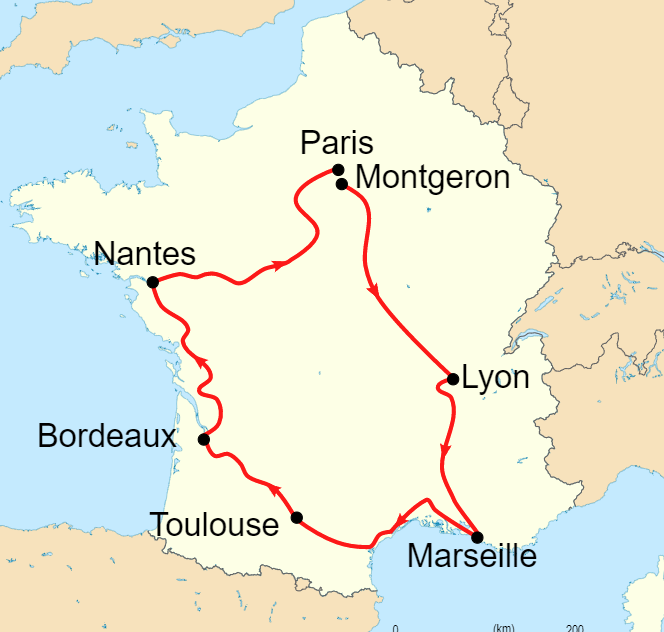
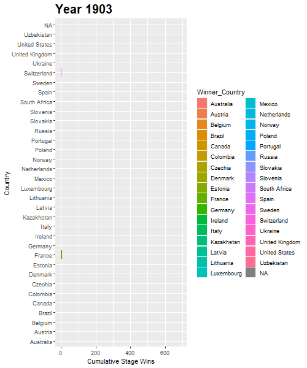
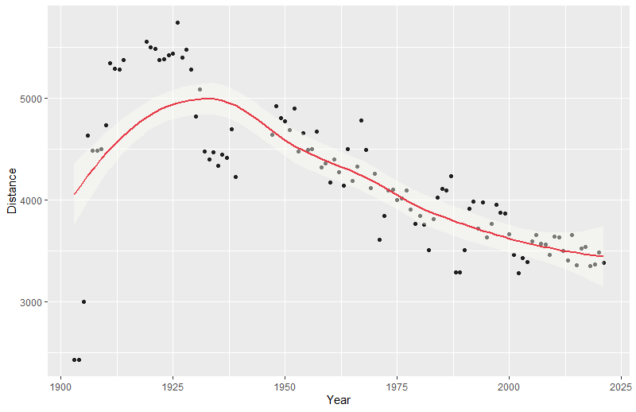
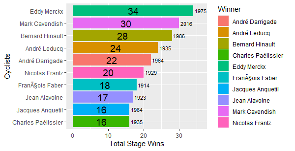

Diving into the Tour De France
In the world of cycling, the Tour De France represents the pinnacle of athleticism and endurance. This yearly bike tour, which navigates through the french mountains, cities, and countryside, is revered by almost everybody whose heard of it, including any non-cyclers.
Today, we'll be taking time to visualize some of the lifetime statistics of the race and summarize important features surrounding it.

Cyclists per year
We can kick off our analysis by looking at how the race has grown over time. The Tour De France began in 1903 in the heart of Paris, with a meager 21 cyclists. Almost every year after, the race has continued to see a growth of participants and in 2021 we saw over 140 cyclists competing. The graph below showcases the total number of cyclists competing each year and shows the trendline to help us see how the race has grown in participants over time.As you can see, the Tour De France is a growing race not only in popularity, but also in participants.
Stages per year - by stage type
The Tour De France, as you might've guessed, is a long race! Every Tour De France, so far, has been at least 2400 miles long and is consequently broken up into multiple stages. These stages are usually split up, categorically, to reflect the geological factors that are most prominent during that portion of the race. For example, the 1903 race consisted of 5 Plain Stages and 1 Mountain Stage. Each year the route is different and it varies in both stage type and overall number of stages. Shown below is an interactive graph that displays the Race Year, Stage Type, and Number of Stages by Type.Cumulative stage wins by country
As with any big sporting event, you're probably curious which countries are performing the best and how they compare to the competition. Over the history of the Tour De France, one unsurprising statistic we see is the total number of stage wins by France. France, year by year, was leading in stage wins, especially when the race was just getting its roots planted. As time went on though, we began to see more countries participating in the race and subsequently more breadth in the countries getting stage wins.
Aside from France, Some of the top contenders for cumulative stage wins were Belgium, Italy, Netherlands, and Spain.
Race Distance Over Time (km)
In the Tour De France not only do participants have to ride fast against their competition, but they also have to cover an incredibly grueling total distance just to finish the race at all. When the few first races started in the early 1900's, these things required the sincerest form of grit and determination. Some early races were nearly 6000 (km) and while the races today are still long and difficult, they usually only last a few thousand kilometers in comparison.
Top 10 cyclists by career stage wins
The last thing we'll take a look at in this Tour De France Data Analysis is the top 10 cyclists of all time. First things first, we need to define what it means to be the best cyclist. We define cyclists with the greatest number of overall stage wins to hold the highest ranking. After performing our analysis, we see a list of our top 10 cyclists with their total number of stage wins counted up and the last year they won a race tallied off to the side. Our 1st, 2nd, and 3rd place career champions are Eddy Merckx, Mark Cavendish, and Bernard Hinault respectively.
Data + Citations
For this project I scoured the depths of the earth (a.k.a. Github + Kaggle) and managed to find two seperate datasets to do my analysis on. The first dataset I found on Github, was a dataset scraped straight from the Tour De France website and provided information from 1903 to 2021. The second dataset was found on kaggle, however the data only went from 1903 to 2017, which is why tried to include multiple datasets in this analysis.Camminady, T. (1903–2021). LeTourDataSet/src at master · camminady/LeTourDataSet [Dataset]. https://github.com/camminady/LeTourDataSet/tree/master/src
Historic Tour De France Dataset. (2018, July 19). [Dataset]. https://www.kaggle.com/ralle360/historic-tour-de-france-dataset